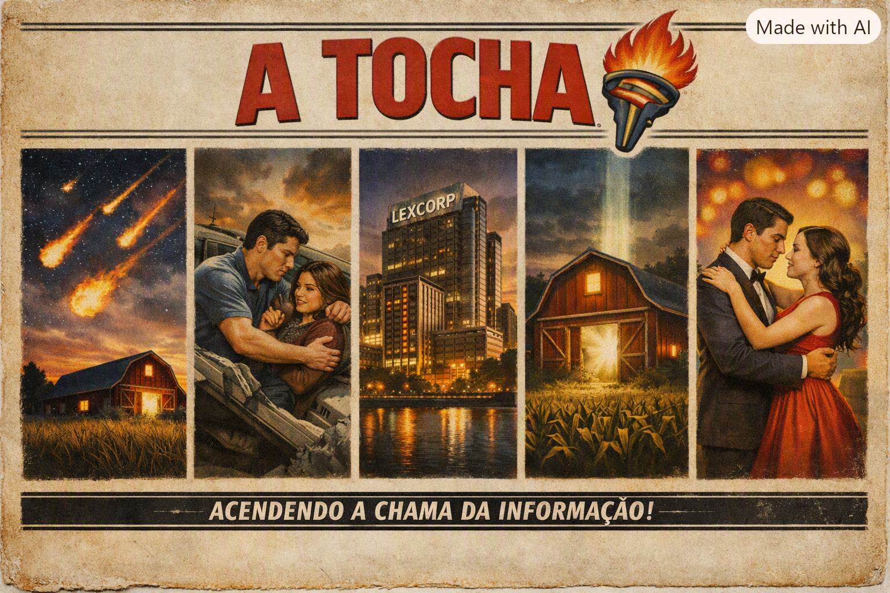

Uma escola tirada do Mural do Esquisito
Bem vindo! Aqui você encontrará notícias e ficará por denro de tudo que acontece na nossa escola.
Por: Beatriz
O jornal do colégio Smallville

Bem vindo! Aqui você encontrará notícias e ficará por denro de tudo que acontece na nossa escola.
Por: Beatriz